Pandas is a powerful and popular library in python used for data manipulation and analysis.It provides data structures and functions to efficiently handled structured data such as tabluar or time-series data
Import pandas libray following below syntax:
import pandas as pd
Pandas series: one-dimensional labeled array, similar to a list or single column of a dataframe
Creating Series in pandas:
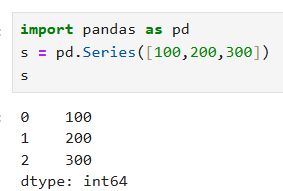Creating Series With index values:
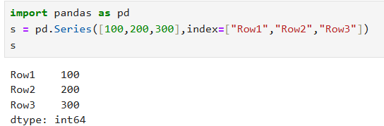Creating Series with tuple:
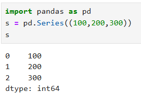Creating Series with array:
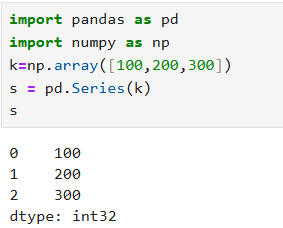Creating Series with Dictionary:
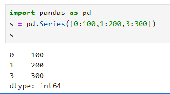Accessing Values:
General Indexing:
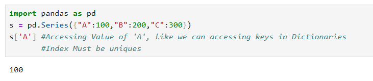Fancy Indexing:
Fancy indexing used to access multiple values
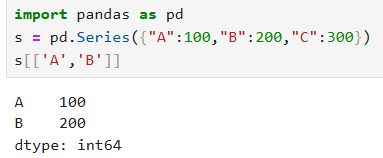Accessing values using loc:
We can access values based on label
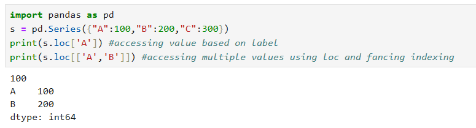Accessing values using iloc:
We can access values based on index
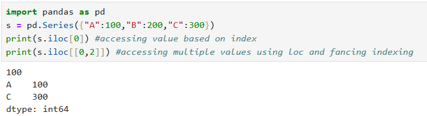Slicing:
General Slicing:
In general slicing end is Inclusive
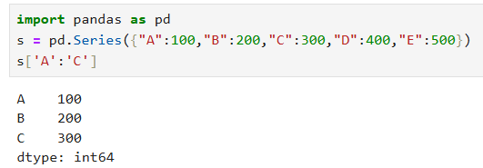Slicing using loc:
In loc slicing, end is also Inclusive
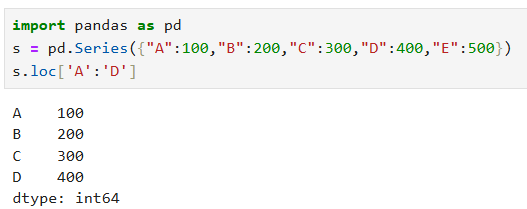Slicing using iloc:
In iloc slicing, end is Exclusive
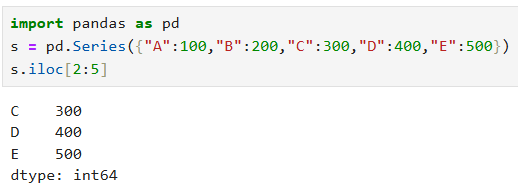